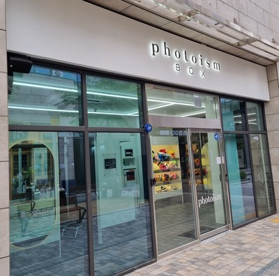
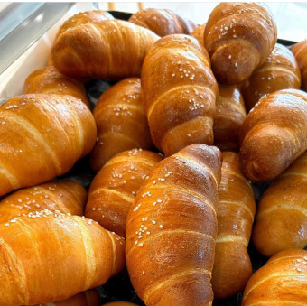
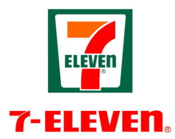

평점
★★★★★

백소정 동양미래대점
★★★★★
5.0
백소정은 돈카츠/ 소바 위주로 파는 가게입니다.
돈카츠는 고기 질도 좋고 부드러워 가족들 끼리도 잘 먹을 수 있고, 두툼한 생고기를 빵가루에 묻혀서 바로 튀겨내서 바삭했습니다.
치즈카츠는 고기 위에 들어간 치즈가 쭉 늘어나는 것이 좋았고 모둠카츠에 같은 곁들어서 나오는 새우튀김도 예술입니다.
마제 소바는 색다른 맛, 예쁜 셋팅이 특징입니다.
◀ 더 자세히 보러가기

포토이즘박스 동양미래대학점
★★★★★
5.0
포토이즘박스는 사진을 찍을 수 있는 공간입니다.
인형, 선글라스와 같은 소품들이 있어서 소품들을 활용해서 사진을 찍을 수 있는 장점이 있습니다.
머리띠, 모자 등의 꾸밀 수 있는 것들이 많고 고데기, 빗 등의 미용 용품들이 있어 더 좋은 모습으로 사진을 찍을 수 있습니다.,
고척돔 근처에 있는 포트이즘박스여서 구단별로 야구 유니폼이 있어 야구 유니폼을 활용할 사진 촬영이 가능해서 야구에 관심있으신 분들이 알아두면 좋을 것 같습니다
◀ 더 자세히 보러가기
★★★★☆

고척동 삼겹살
★★★★☆
4.0
고척동 삼겹살은 오전 11시에서 오후 11시까지 영업하고 마지막 주문을 오후 10시에받습니다.
프리미엄 무한삼겹살은 1인 16,500원에 다양한 종류의 고기들을 먹을 수 있고 상차림용 음식들도 셀프로 더 먹을 수 있습니다. 된장찌개에 우삼겹이 들어가서 된장 국물도 맛있게 먹을 수 있는 장점이 있습니다. 셀프바에 볶음밥을 해 먹을 수 있는 재료도 있어서 마지막까지 깔끔하게 먹을 수 있습니다.
◀ 더 자세히 보러가기

역전할머니맥주
★★★★☆
4.0
역전할머니맥주 고척점은 고척돔 앞에 있는 주점이고 오후 5시에 오픈하고 새벽 3시쯤에 문을 닫는다고 합니다. 또한 역전 할맥의 맥주는 잔이 얼어서 나오기 때문에 아주 차가워서 마시기 좋고 안주들이 가성비가 좋습니다.
음식들 중 치즈라볶이, 치즈롤까스 등이 맛있었고 순살 치킨이랑 감자, 고구마가 바싹 구워서 나아서 씹는 맛이 좋고 직원분들이 친절했지만 분위기가 시끌벅적한 분위기이기 때문에 조용한 것을 좋아하시는 분들께는 가기 힘든 장소일 수도 있습니다.
◀ 더 자세히 보러가기

최고당 돈까스
★★★★☆
4.0
최고당 돈까스는 돈까스를 위주로 파는 가게입니다.
매장 내부가 깔끔하고 냄새없이 바삭하게 나오는 것이 특징이고 소스가 두개로 다르게 나오기 때문에 다른 맛으로 먹을 수 있는 장점이 있습니다. 또한 냉면도 소스가 따로 나와서 물냉면/ 불냉면으로 다르게 먹을 수 있고 맛있게 먹을 수 있습니다,
◀ 더 자세히 보러가기

얌얌브레드
★★★★☆
4.0
얌얌브레드는 다양한 빵들을 팔고 있는 빵집입니다.
얌얌브레드의 빵들 중에는 스콘, 베이글, 크루키, 소금빵 등을 팔고 있습니다.
얌얌브레드의 빵들 중 에그 인 헤드는 빵이 부드러워서 먹기 좋다고 하고,
소금빵은 겉이 바삭하고 속이 쫀득해서 맛이 좋다고 합니다.
이 가게에서는 왠만한 빵들을 팔고 있고 개별로 비닐 포장이 되어 있어서 위생적이라고 합니다.
◀ 더 자세히 보러가기

메가 MGC커피 고척중앙점
★★★★☆
4.0
메가 MGC커피는 다양한 커피나 차를 팔고 있는 커피 전문점입니다.
메가커피에서는 커피 뿐 만 아니라 차, 프라페 그리고 쿠키와 같은 디저트 음식들을 팔고 있습니다.
아이스 아메리카노가 2000원인 만큼 가격 가성비가 좋고 양도 꽤 많이 있어서 마시는데 양이 부족하지 않습니다.
가게 건물이 꽤 커서 사람들을 데리고 대화화는 장소로 사용하기에도 좋습니다.
◀ 더 자세히 보러가기
찰리팝 pc방 동양미래대점
★★★★☆
4.0
실내가 굉장히 넓어서 게임을 플레이하기 쾌적한 환경이고
고성능 모니터, 깔끔한 인테리어로 청결함을 체감할 수 있습니다.
다양한 식사 메뉴와 음료 메뉴가 준비되어 있어서 컴퓨터를 쓰다가 출출할 때 먹기 좋고,
오픈형 주방의 형식이라 조리하는 모습도 볼 수 있습니다.
모니터와 PC를 좋은 사양으로 설치해 놓았기에 컴퓨터를 쾌적하게 쓸 수 있습니다.
◀ 더 자세히 보러가기
백남옥 손만두
★★★★☆
4.0
백남옥손만두는 다양한 만두들을 파는 가게입니다.
다양한 만두들을 팔기 때문에 입맛에 맞게 먹을 수 있습니다.
근처에 고척구장이 있기 때문에 야구장에 들고 가서 먹기에 적합합니다.
투명한 감자만두피가 말랑하고 쫀득해서 먹기에 좋습니다.
사장님께서 친절하셔서 편하게 주문하시면 좋을 것 같습니다.
◀ 더 자세히 보러가기

구로 메디칼약국
★★★★☆
4.0
구로 메디칼약국은 다양한 약들을 팔고 있는 약국입니다.
야구장, 대학교나 사람들이 많이 지나다니는 곳에 약국이 있기 때문에
야구를 보려고 오신 분들이나 대학생 분들이 갑자기 몸이 안 좋아질려고 할 때 빠르게 오실 수 있습니다.
근처에 병원이 있기 때문에 병원에서 진료를 받으신 분들이 오시기에도 좋습니다.
약국 직원분들이 복약지도를 잘 해주시기에 약을 정확하게 복용 할 수 있습니다.
◀ 더 자세히 보러가기
★★★☆☆

세븐일레븐 고척점
★★★☆☆
3.0
세븐일레븐은 다양한 물품들을 파는 편의점입니다.
삼각김밥, 라면과 같은 음식들을 팔기 때문에 가성비 있게 음식을 먹을 수 있고
매일 열려 있기 때문에 급하게 물건을 살 필요가 있을때 오셔서 사도 괜찮습니다.
◀ 더 자세히 보러가기

죠스떡볶이
★★★☆☆
3.0
죠스떡볶이 동양미래대점은 떡볶이, 순대, 튀김 등의 분식류와 우동, 닭강정 등을 파는 가게입니다.
1인 세트, 2인 세트 등 인별 세트메뉴도 따로 팔아서 인원수 대로 먹기에도 좋습니다.
떡볶이의 국물이 순대 간이나 튀김을 찍어 먹기에도 안성맞춤입니다.
야구장이 근처에 있어서 야구장에서 먹을 음식을 사가기에도 적합한 가게이고,
포장도 깔끔하게 나와서 흘릴 걱정은 안 하셔도 좋을 것 같습니다.
◀ 더 자세히 보러가기
★★☆☆☆
★☆☆☆☆